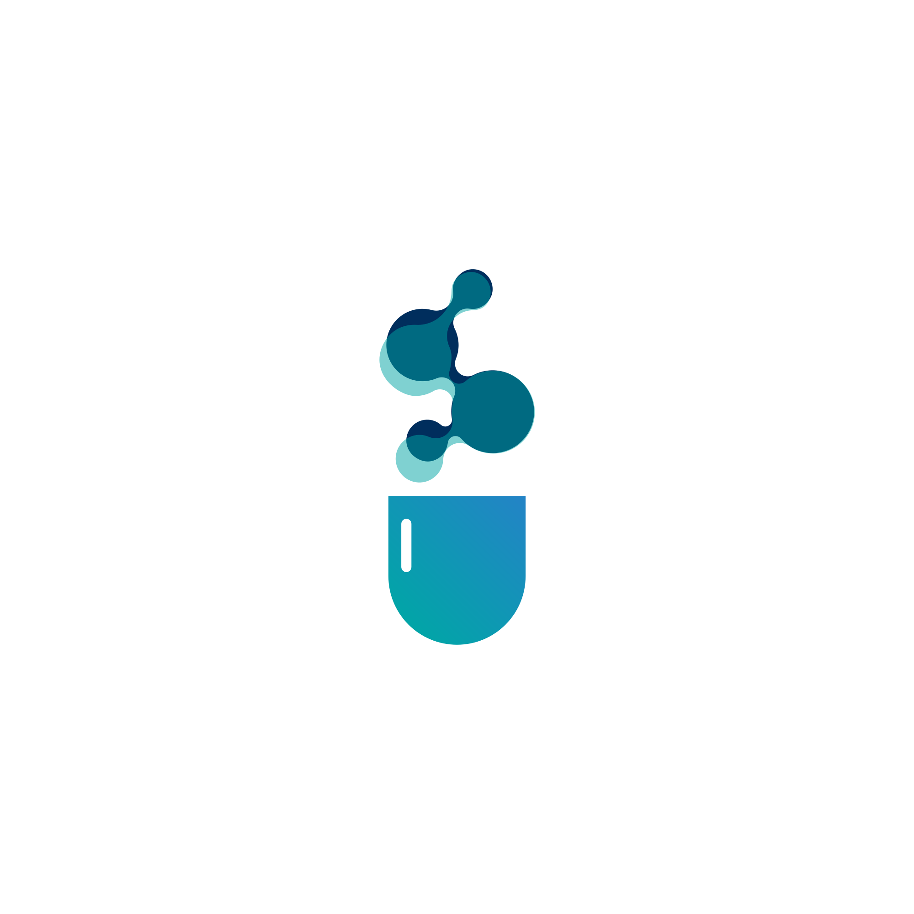

reveon.ai 404 · Page not foundThis page didn't pass review.
The page you're looking for doesn't exist or has moved. Everything worth reading is one click away.

reveon.ai 404 · Page not foundThe page you're looking for doesn't exist or has moved. Everything worth reading is one click away.